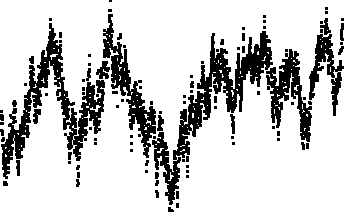

| First, we present the basic construction of the cartoons. | |
 |
As a simple application, we show how to simulate Brownian motion using simple cartoons. |
|  | Next, we modify the cartoon generator to more general unifractal cartoons, incorporating global dependence. |
| Then, we modify the cartoon generator to still more general multifractal cartoons, incorporating both global dependence and long tails. | |
| Next, we specialize the cartoon generator to symmetric cartoons, and illustrate the wide range of behaviors that occur in even this restricted situation. |
Return to Random Fractals.